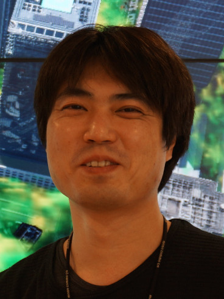
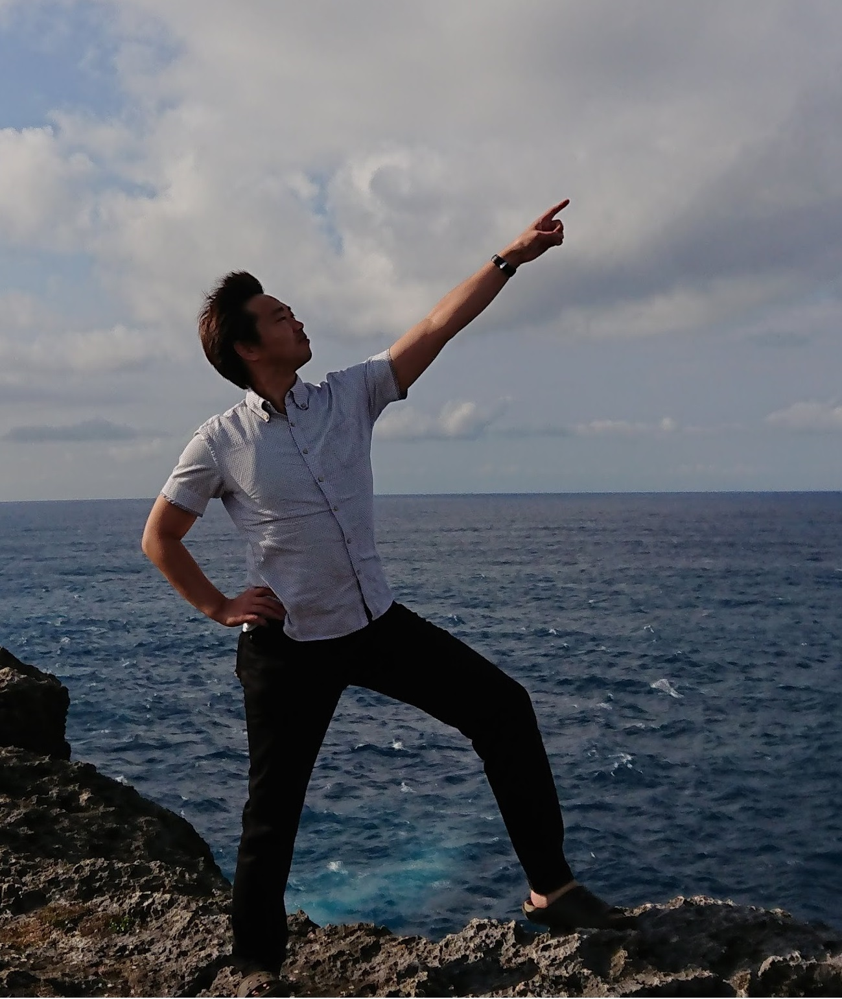

チュートリアル・基調講演
川原慎太郎海洋研究開発機構 |
チュートリアル1:
ゲームエンジンであるUnity上で動作する可視化フレームワークVisAssetsを用いた，可視化アプリケーションの開発手順を紹介する．
本フレームワークでは，一般的な可視化フローを構成する小要素がモジュールアイコン化され，
それらをドラッグアンドドロップでツリー状に接続するだけでUnity上での可視化アプリケーション構築ができる．
本チュートリアルでは，スカラー場およびベクトル場データを可視化するアプリケーションを構築し，
スタンドアロンアプリケーションとして実行するまでをハンズオン形式で紹介する．
|
伊藤正彦北海道情報大学情報メディア学部 准教授 |
チュートリアル2:
データ処理に適した環境であるPython上で利用できる可視化のライブラリはいくつかあるが、
インタラクティブな可視化を作成できるBokehは学術研究などでも広く利用されている。
Bokehを用いることで、簡単なスクリプトで一般的な可視化を簡単に作成することができる。
本チュートリアルでは、研究を始めたばかりの人（学部あるいは修士の学生あたり）を想定し、
簡単なデータの扱いからインタラクティブな可視化を生成するまでの流れをハンズオン形式で紹介する。
|
夏川浩明京都大学学術情報メディアセンター 特定講師 |
基調講演1:
SDGs（持続可能な開発目標）に掲げられているように生態系保全や持続可能な利用を進めるうえでは、
生態系のダイナミクスを理解することや予測をすることは、主要な研究課題となる。
この講演では複雑な生態系のダイナミクスを理解するためのデータ駆動型解析法である
Empirical Dynamic Modeling（EDM）という手法や、EDMとインタラクティブな
可視化技術を融合した解析アプローチを紹介する。
生態学データへの適用事例を通して見る生態系のうごきや本研究の今後の展望についても紹介する。
|
鳥海不二夫東京大学大学院工学系研究科 システム創成学専攻 教授  |
基調講演2:
現在の言論空間はフィルターバブル，エコーチェンバーの影響を強く受け，フェイクニュースや社会的分断などを招いている．
このような現代社会の情報環境は、ユーザーが欲しい情報だけに触れられるようになったことによるゆがみといえる．
これは飽食の時代において好きな食べ物だけを食べている状態と類似している．
欲しい情報だけを摂取することを「情報不健康」な状況とすれば，
「情報的健康（インフォメーション・ヘルス）」を目指すデジタルダイエットを行うことも可能になるだろう．
本講演では情報的健康の基本的な考え方と解説するとともに，実現するために必要な可視化技術について議論する．
|
市野順子東京都市大学メディア情報学部 情報システム学科 教授 |
基調講演3:
3次元バーチャル空間でのコミュニケーションは、アバターが身体性を有することから、
人々のコミュニケーションに新たな展開をもたらす可能性があります。
本講演では、3つのコミュニケーションツール
（ビデオチャット、ユーザーの外見と似ているアバター、ユーザーの外見と似ていないアバター）を用いたときに、
人々がどれくらい自己を開示するかを調べた実験を中心に、バーチャル空間における人々のコミュニケーション行動について紹介します。
|
安藤幸央シーグラフ東京委員長 |
現地＋オンラインで開催した SIGGRAPH 2021 ＆ SIGGRAPH ASIA 2021 レポートコンピュータグラフィックスとインタラクティブ技術の学会、祭典でもあるSIGGRAPH。米国開催のSIGGRAPH 2021は完全オンライン、SIGGRAPH ASIA 2021は、東京国際フォーラム現地での開催に加えてオンラインでの配信が行われました。 それらSIGGRAPHより、最新のCG/VR/AR/人工知能活用などの研究内容、発表内容を多岐にわたってご紹介いたします。安藤幸央 シーグラフ東京委員長。 株式会社エクサ スマートシステム開発本部 / 企画部 所属。 三次元コンピュータグラフィックス、ユーザエクスペリエンスデザインが専門。 Web、情報家電、スマートフォンアプリ、VRシステム、 巨大立体視ドームシアター、デジタルサイネージ、メディアアートまで、多岐にわたった仕事を手がける。 「Generative Design—Processingで切り拓く、デザインの新たな地平」翻訳、 「Processing:ビジュアルデザイナーとアーティストのためのプログラミング入門」翻訳、 「SF映画で学ぶインタフェースデザイン アイデアと想像力を鍛え上げるための141のレッスン」監訳。 |